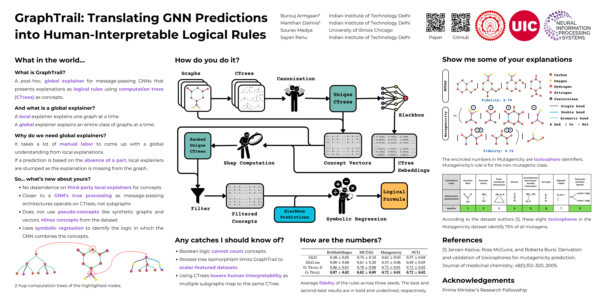

Publications
Titles are linked to papers; images to posters; author names to their websites.⛩️ NeurIPS 2025 (Oral) ⛩️
GnnXemplar: Exemplars to Explanations -
Natural Language Rules for Global GNN Interpretability

⛩️ NeurIPS 2024 ⛩️
GraphTrail: Translating GNN Predictions into Human-Interpretable Logical Rules
